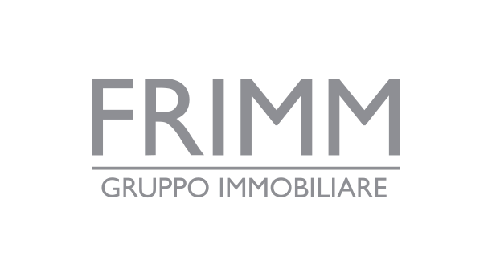
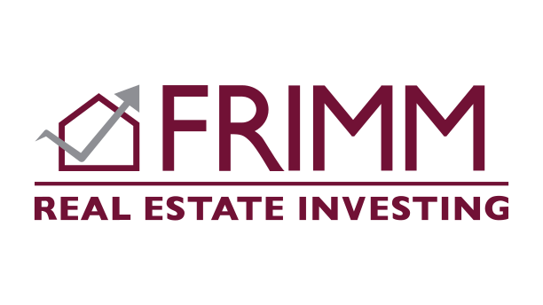
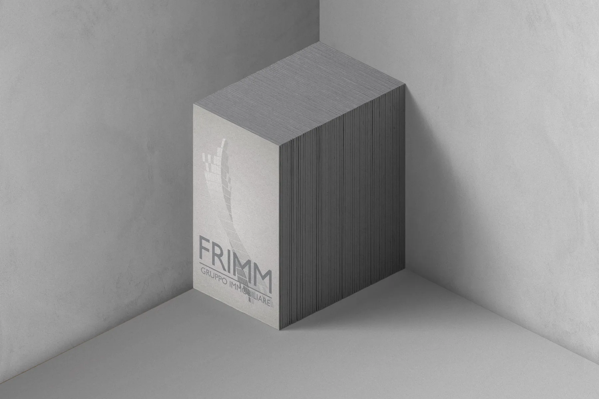

01 — Idea
FRIMM is a real estate agency working across the group and its individual branches — each with its own logo, built from the same core identity.


02 — Execution
Each branch keeps the structure of the group mark and takes its own colour; Gill Sans carries everything. Same commitment, same hand, different scale.
Logo, titles, textGill Sans
Group
#8E8F94
Real Estate
#711135

03 — Outcome
In use across the agency's branch network.
